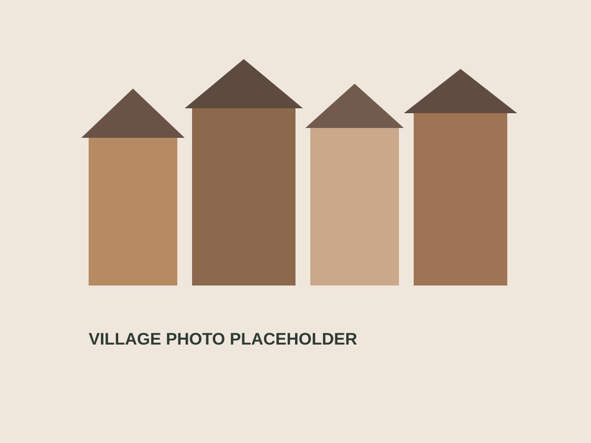

HikingTrekking
Mention local walks, scenic drives, and trail ideas here: [ADD FAVORITE HIKES OR STARTING POINTS].Indica qui passeggiate locali, strade panoramiche e idee sentiero: [AGGIUNGI TREKKING PREFERITI O PUNTI DI PARTENZA].


Location / ExplorePosizione / Dintorni
This page gives future guests a reason to imagine the trip before they book, and helps confirmed guests plan their stay.Questa pagina aiuta i futuri ospiti a immaginare il viaggio prima di prenotare e aiuta quelli gia confermati a organizzare il soggiorno.
Sottoguda offers a quieter Dolomite experience. It feels rooted in the local landscape, with mountain views, traditional architecture, and a slower pace than larger resort centers.
Sottoguda offre un'esperienza dolomitica piu tranquilla. E profondamente legato al territorio, con viste sulle montagne, architettura tradizionale e un ritmo piu lento rispetto ai centri turistici piu grandi.
Use this section to add your own perspective on what guests notice first: the light, the stone buildings, the access to trails, or the feeling of being in a real alpine village.
Usa questa sezione per aggiungere il tuo punto di vista su cio che gli ospiti notano subito: la luce, le case in pietra, l'accesso ai sentieri o la sensazione di trovarsi in un vero borgo alpino.

Mention local walks, scenic drives, and trail ideas here: [ADD FAVORITE HIKES OR STARTING POINTS].Indica qui passeggiate locali, strade panoramiche e idee sentiero: [AGGIUNGI TREKKING PREFERITI O PUNTI DI PARTENZA].
Add your preferred ski access notes, nearest lifts, and whether a car is recommended: [ADD SKI DETAILS].Aggiungi note su accesso agli impianti, cabinovie vicine e se l'auto e consigliata: [AGGIUNGI DETTAGLI SCI].
Highlight alpine scenery, forests, mountain roads, and quieter corners that make the area memorable.Valorizza i paesaggi alpini, i boschi, i passi montani e gli angoli piu tranquilli che rendono la zona memorabile.
Add a curated list of nearby places to visit: [ADD MALGA CIAPELA], [ADD ALLEGHE], [ADD ARABBA], [ADD OTHER FAVORITES].Aggiungi una lista curata dei luoghi vicini da visitare: [AGGIUNGI MALGA CIAPELA], [AGGIUNGI ALLEGHE], [AGGIUNGI ARABBA], [AGGIUNGI ALTRI PREFERITI].
Summer walks, autumn foliage, winter ski days, and spring quiet can each become their own short recommendation list.Passeggiate estive, colori autunnali, giornate sugli sci in inverno e la quiete primaverile possono diventare piccoli consigli dedicati per ogni stagione.
Add your preferred travel instructions here: [ADD AIRPORTS], [ADD TRAIN OPTIONS], [ADD DRIVING NOTES], [ADD WINTER ROAD ADVICE].Aggiungi qui le istruzioni di viaggio preferite: [AGGIUNGI AEROPORTI], [AGGIUNGI TRENI], [AGGIUNGI NOTE PER ARRIVARE IN AUTO], [AGGIUNGI CONSIGLI PER L'INVERNO].
MapMappa
Suggested note: [ADD EXACT ADDRESS], [ADD GPS NOTES], [ADD WHETHER GUESTS SHOULD ARRIVE BY CAR].Nota suggerita: [AGGIUNGI INDIRIZZO ESATTO], [AGGIUNGI NOTE GPS], [AGGIUNGI SE E CONSIGLIATO ARRIVARE IN AUTO].